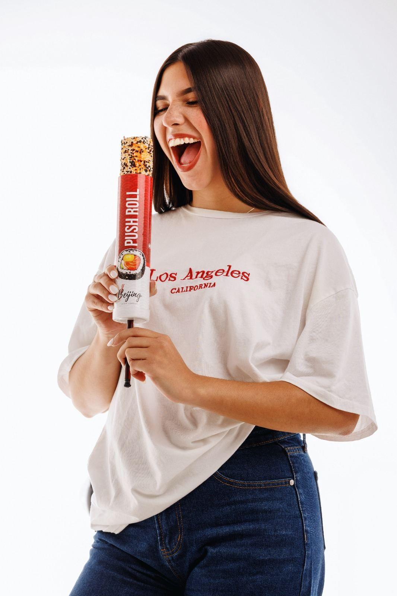
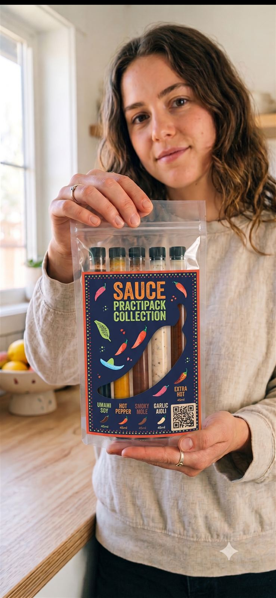

Observar antes de imaginar
Comienzo entendiendo comportamientos, no proponiendo ideas. Las mejores oportunidades nacen de observar lo que el mercado todavía no interpreta bien.
Arquitecto Estratégico de Sistemas de Innovación Comercial
Descubro oportunidades que una organización todavía no ha comprendido del todo y las convierto en sistemas comerciales capaces de generar valor real. Parto de comportamientos y fricciones del mercado, no de ideas sueltas.
Conecto disciplinas que normalmente trabajan por separado —estrategia, consumidor, producto, operación, comunicación y experiencia— hasta construir una solución coherente y lista para implementarse.
Mi objetivo no es hacer que una marca se vea más innovadora.
Mi objetivo es ayudarla a detectar, construir e implementar nuevas oportunidades antes que los demás.
Ayudo a empresas a detectar oportunidades que otros todavía no ven y convertirlas en productos, experiencias y sistemas comerciales listos para implementarse y escalar.
Comienzo entendiendo comportamientos, no proponiendo ideas. Las mejores oportunidades nacen de observar lo que el mercado todavía no interpreta bien.
Nunca analizo un producto aislado. La oportunidad aparece en cómo interactúan consumidor, operación, producto y comunicación, no en las partes sueltas.
Una buena idea no vale por novedosa. Vale porque reduce el riesgo de una decisión y le da a la organización más claridad para avanzar.
No considero terminado un proyecto cuando existe una presentación. Lo considero terminado cuando existe una implementación capaz de producir resultados reales.
Consumo masivo y moda deportiva de lujo: la misma metodología, aplicada a mercados distintos.

Formato individual de sushi en tubo, diseñado para comerse en movimiento. Proyecto que valida en el mercado la metodología de innovación comercial.
Marca de luxury sportswear. Actualmente soy su Arquitecto Estratégico de Sistemas Comerciales, responsable de estructurar el sistema comercial de la marca.

Colección de sachets individuales de salsas, pensada para prueba y consumo por porción. En proceso de validación comercial con las primeras marcas.